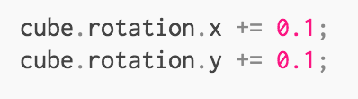
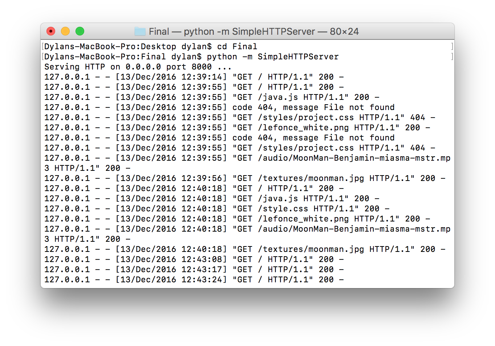

Final Presentation
WebGL, a JavaScript API for creating interactive 3D and 2D graphics
using three.js
A JavaScript 3D Library which makes WebGL simpler.
Add your three.js libary
Create your scene. We need three things: A scene, a camera, and a renderer so we can render the scene with the camera.
To create a cube, we need a BoxGeometry. This is an object that contains all the points (vertices) and fill (faces) of the cube.
This will create a loop that causes the renderer to draw the scene 60 times per second
Add the following right above the renderer.render call in your render function:
This will be run every frame (60 times per second), and give the cube a nice rotation animation
You must be on a local host for this to work
I have already creating my python server on port 8000
https://threejs.org/docs/index.html#Manual/Introduction/Creating_a_scene
https://developer.mozilla.org/en-US/docs/Web/API/WebGL_API/Tutorial/Lighting_in_WebGL
https://threejs.org/docs/index.html?q=audio#Reference/Loaders/AudioLoader
https://developer.mozilla.org/en-US/docs/Web/API/WebGL_API